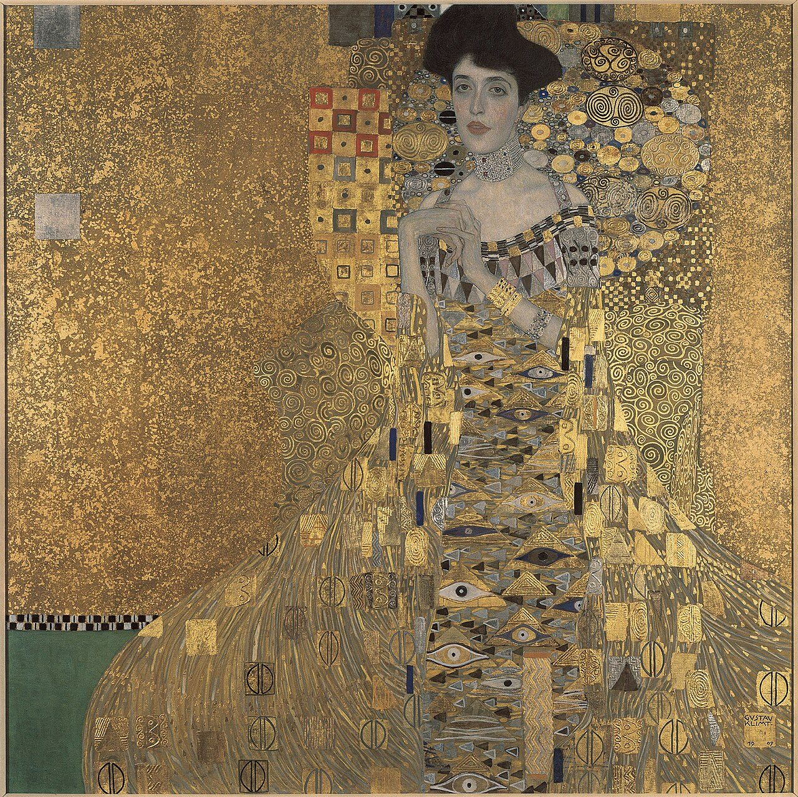

References / Painting / 305
Portrait of Adele Bloch-Bauer I
Gustav Klimt’s square portrait of 1907 sets a naturalistic face and hands in a field of gold covered with squares, spirals, eyes, and checkered strips.
- Source
- Wikipedia: Portrait of Adele Bloch-Bauer I
- Creator
- Gustav Klimt
- Made
- 1903–1907 (signed and dated 1907)
- Style
- Vienna Secession (agent-proposed, not yet reviewed by a person)
- Moods
- Opulent, elegant, geometric
- Evidence
- Inspected a 1280 × 1279 px rendition of the Neue Galerie New York photograph on Wikimedia Commons. Gold and silver leaf photograph differently under different light, so the colours are approximate.
- Reviewed
- Rights
- Open license, stored. License: public domain. Rights policy
Context
Wikipedia: an oil painting on canvas with gold leaf by Gustav Klimt, completed between 1903 and 1907, commissioned by the sitter’s husband, Ferdinand Bloch-Bauer. It is described as the final and most fully representative work of Klimt’s golden phase. It was stolen by the Nazis in 1941, restituted to Maria Altmann in 2006, and sold the same year. Wikipedia.
The Commons file page gives the medium as oil, silver, and gold on canvas, 140 × 140 cm, and the location as the Neue Galerie New York. Commons.

Observed
- The canvas is square. The left half is an almost plain field of speckled gold, with two small silver squares.
- Behind the sitter, a panel is filled with small squares, each outlined and holding a dot or a smaller square, some in red.
- The dress is a tall field of gold triangles and almond-shaped eyes, and the chair and sleeves carry spirals, circles, and flat rectangles of gold and silver.
- A narrow black and white checkered strip runs along the lower left, above a band of flat green.
- Only the face, shoulders, and hands are painted naturalistically; everything else is flat pattern.
- The signature “GUSTAV / KLIMT” is lettered in a small square at the lower right, with “19 / 07” below.
Why it belongs
The painting shows where the style’s gold comes from. The square motifs and the checkered strip match the Wiener Werkstätte vocabulary, while the eyes and spirals are Klimt’s own.
The signature in a small square box is the same device as the monograms on Werkstätte objects and posters.
Borrow
Leave one large area in flat gold or a gold tint, and concentrate pattern in one zone beside it.
Use a grid of small outlined squares, each with a dot, as a panel texture.
Put a signature or date in a small square box of stacked capitals.
Measured
Machine-extracted by tools/image-traits.py on . Full measurement.
- Mean chroma
- 0.24
- Palette
- #856c47 30%
- #6d5a3e 14%
- #99794a 13%
- #b18e56 8%
- #bd9a5e 6%
- #c7a669 4%
- #8c8376 4%
- #5e4e37 3%

